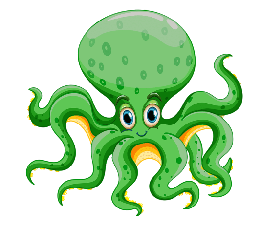
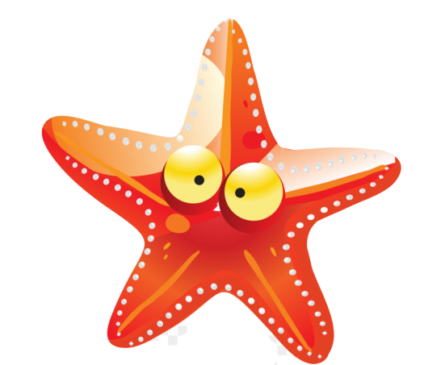
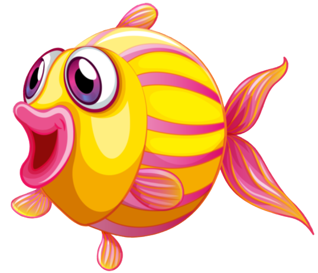
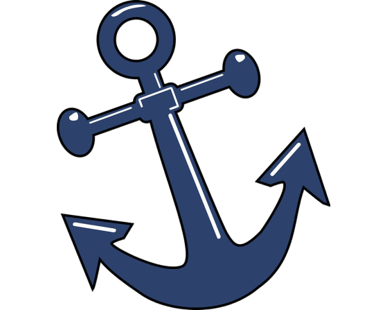
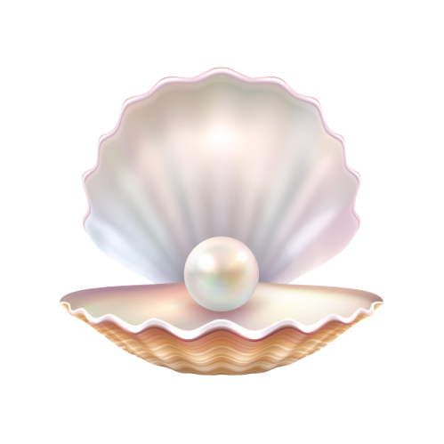

Le Regole del Gioco:
• 7 carte contrassegnate dal simbolo  e da un valore da 1 a 7
• 7 carte contrassegnate dal simbolo  e da un valore da 1 a 7
• 7 carte contrassegnate dal simbolo  e da un valore da 1 a 7
• 7 carte contrassegnate dal simbolo  e da un valore da 1 a 7
• 4 carte contrassegnate dal simbolo  e il cui valore è il doppio della somma dei valori presenti sulla torre.
Per poter aggiungere una carta ad una torre con lo stesso simbolo la torre deve essere vuota o la carta da aggiungere deve avere un valore inferiore alla carta in cima alla torre.
Si può inserire una punta solo su di una carta di valore uno di qualsiasi simbolo.Esempi di torri valide:
Lo scopo del gioco è totalizzare più punti dell'avversario. Il totale dei punti per un giocatore è dato dal totale dei punti di tutte le torri giocate. La presenza di una punta fa raddoppiare il valore di quella torre.
Le torri dell'esempio precedente hanno i seguenti valori:
• 7, 6, 5, 4, 3, 2, 1, P: 56
• 7, 5, 3, 1, P: 32
• 3, 2, 1, P: 12
• 1, P: 2
• 4: 4
Ad inizio partita il mazzo viene mescolato. Ogni giocatore riceve una mano iniziale di tre carte. Viene deciso in modo casuale il giocatore che inizia per primo. In caso di partite successive ci si alterna ad iniziare per primi.
Il primo giocatore gioca il suo turno che consiste nel compiere le due seguenti azioni in ordine:
1. Prima pesca una carta dal mazzo coperto o da quello degli scarti
2. Poi gioca una carta dalla mano contribuendo alla costruzione di una propria torre (ognuno contribuisce alle proprie torri) o la scarta a faccia in su aggiungendola al mazzo degli scarti.
Tutte le carte scartate sono considerate accessibili.
Il secondo giocatore gioca il suo turno allo stesso modo.
Il gioco finisce immediatamente quando l'ultima carta dal mazzo coperto è stata pescata.
Sono possibili le seguenti modalità di gioco:
- Contro un giocatore artificiale
- Contro un giocatore umano